Valinor, level 1 to 10
Valinor is the island every character starts on. Three rules shape everything you do there:
- Your character stops at level 10 and every skill at level 15.
- Dying costs nothing.
- You can leave whenever you like, and never come back.
So the aim is not to get out fast. It is to leave at level 9 or 10 with the totem, the bags, the gear that is still good on the mainland, and your orbs where you want them.
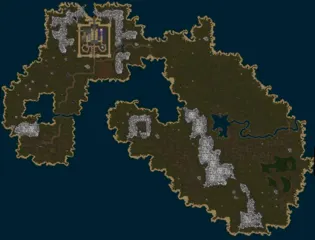
The islandAE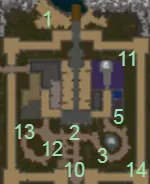
The castle, and who stands whereAE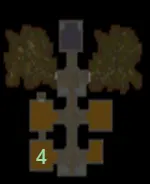
Under the castleAE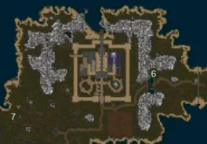
Outside the wallsAE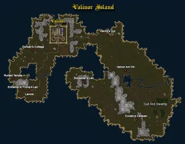
Valinor on the wiki's mapWiki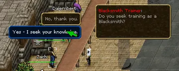
The trainers' hallWikiOne trap: the wiki says quests stop paying experience once you are level 10 ("you have learned all you can on Valinor"). Hand quests in as you go, do not save them up.
Trainers: pick your weapon, take more if you like
In the hall around Sage Haritod stand fourteen trainers. Each gives you a starting weapon and a quest in seven steps: gain 500, 700, 900, 1,100, 1,500, 3,000 and 5,000 experience in that skill, returning after each for a reward. Since 2024 you can run several of these at once.
| You are | Take | Why |
|---|---|---|
| Warrior | Large Blades, or Polearms | The Sword of the Island Guard (7-18) is the best one-handed reward; the Island Guard Lance (7-20) hits hardest |
| Archer | Bows | Island Archers Bow (5-15, fast), and 100 free arrows at every step |
| Mage | Body first, then the other three schools | Body is the heal. Each school gives 8 runes, a sash (+2 to the school) and an amulet (+3). Having all four at 15 is what the Silvest mage quests ask for later |
| Anyone | Farming | Its last step gives a Storage Crate (24 slots). It is the only trade whose reward we know to be worth it |
Two warnings. A skill that reaches 15 before the last step cannot finish its training, so do not pour experience into a skill you are still being trained in. And never spend experience pool on a skill your character has no level in at all: on our runs the server ended the session each time.
The magic trainers are down the stone stairs at 763,118; the weapon trainers on the right side of the hall, the trade trainers on the left.
The order
Coordinates are for the island's map. Creature levels are from the game's data.
Level 1 to 2: in town, no risk
| Quest | Who and where | What | Reward |
|---|---|---|---|
| Welcome To Ashen EmpiresAE Guides · Wiki | Duke Randolf on the beach, then Lord Trembley, Sage Haritod (758,100), a trainer, the Captain of the Guard at the south gate | Talk your way through; later kill 25 bats or snakes | Large Knapsack (16 slots), Boots of the Island Guard (+1 Dex +2 Con), a Sextant, level 2 |
25 pictures of Welcome To Ashen Empires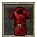 Tunic of the Island GuardAE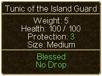 Tunic of the Island Guard (tooltip)AE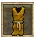 Smock of the Island GuardAE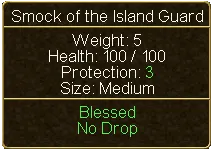 Smock of the Island Guard (tooltip)AE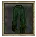 PantsAE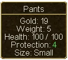 Pants (tooltip)AE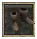 Boots of the Island GuardAE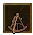 SextantAE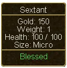 Sextant (tooltip)AE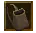 Large KnapsackAE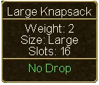 Large Knapsack (tooltip)AEDuke RandolfAE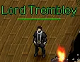 Lord TrembleyAE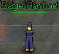 Sage HaritodAE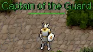 Captain of the GuardAE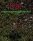 BatAE SnakeAEValinor IslandWiki SnakeAEValinor IslandWiki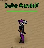 Duke RandolfWikiLord TrembleyWiki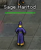 Safe HaritodWiki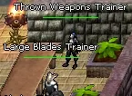 Weapons TrainerWiki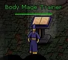 Mage TrainerWiki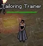 Tradeskill TrainerWiki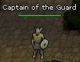 Captain of the GuardWiki | |||
| Curtis's SecretAE Guides · Wiki | Curtis Leabu, near the portal gate (787,96) | Buy an Empty Milk Bottle from the provisioner (734,115), fill it at a cow outside the west gate, give it to him, click the Strange Rock at 787,90 | Old Worn Pack (8 slots) |
| Creatures of DransikAE Guides · Wiki | Knight Bastrop, in the room below the Mage Shop (780,124) | Kill a creature, then use the scalpel on a live one of the same kind | Opens the Identification skill |
3 pictures of Creatures of Dransik | |||
| Our Little Spider ProblemAE Guides · Wiki | Serina Wilcut, below the Alchemist shop (782,122) | 10 Dredge Spiders (level 1) in the cellar | 100 gold |
3 pictures of Our Little Spider Problem | |||
Level 2 to 3: just outside the walls
All of these are level 1 and 2 creatures and can be done in one round with the 25 bats or snakes of the welcome quest.
| Quest | Who | What | Reward |
|---|---|---|---|
| Strange FascinationAE Guides · Wiki | Mary Locksley, near the spawn gate (773,145) | 10 Bat Ears | Bat Ear Necklace (+1 Dex) |
5 pictures of Strange Fascination | |||
| Davey's RattleAE Guides · Wiki | Davey Logan, south-west of town (746,144) | Snakes until the rattle drops | Spider Silk Leggings (+1 Int +25 health) |
| The NecklaceAE Guides · Wiki | Douglas Logan, in the cellar, south-west room | 10 Triddle Shells | Triddle Shell Armor (+1 Con, armor 12) |
| The Alchemist's ApprenticeAE Guides · Wiki | Alchemist Baki (781,115) | 2 Blue Topaz from Triddles | A healing potion; repeatable |
4 pictures of The Alchemist's Apprentice | |||
Level 3 to 4: the first walks
| Quest | Who | What | Reward |
|---|---|---|---|
| Kumba's PendantAE Guides · Wiki | Kumba Northern, below the centre of town (758,136) | Spiders (level 3) until it drops | A cloak (armor 3) |
5 pictures of Kumba's Pendant | |||
| Fresh MeatWiki | Roger Duncan, Duncan's Cottage west of town (647,180) | 10 Venison from Deer (level 3; they run, a ranged weapon helps) | A stamina potion; repeatable |
1 pictures of Fresh Meat | |||
| The RingAE Guides · Wiki | The Shady Looking Man at a campfire north of the east road (about 826,126) | The evidence locker at the east gate (886,137), a receipt from Sarah Bent (782,120), the locker again | See below |
| Hell Hath No FuryAE Guides · Wiki | A Young Maid, by the south-east corner of the outer wall (795,157) | Give her Sarah's Promise Ring | 1,050 experience pool |
4 pictures of Hell Hath No Fury | |||
| War, first partAE Guides · Wiki | The Captain of the Guard, after the welcome quest | Report to Guard Calaway at the southern guard post, fetch Sergeant Dawson's report at the South Bridge | |
18 pictures of WarHelm of the Island GuardAEHelm of the Island Guard (tooltip)AECaptain of the GuardAEGuard CalawayAESergeant DawsonAEGoblin RuntAEGoblin WorkerAEGoblin Shaman RuntAEIsland Guard on the moveAEIsland Guards attacking the Goblins at the south bridgeAEEastern Gate LieutenantAESmall SkeletonAERancid ZombieAESkeltal ApprenticeAESkeltal PupAEGuard CalawayWikiGoblin RaidWikiBoneSnarlWiki | |||
The Ring ends two ways. Give the ring to Sarah Bent, not back to the Shady Looking Man: she pays more, and her Promise Ring is what the Young Maid's quest needs.
Level 4 to 7: the goblins south-west
Cross the South Bridge to Lanore. The goblins there are level 3 to 5.
| Quest | Who | What | Reward |
|---|---|---|---|
| War, the goblinsAE Guides · Wiki | The Captain | 25 goblins of any kind, then the raid at the bridge | Helm of the Island Guard (+1 Str) |
18 pictures of WarHelm of the Island GuardAEHelm of the Island Guard (tooltip)AECaptain of the GuardAEGuard CalawayAESergeant DawsonAEGoblin RuntAEGoblin WorkerAEGoblin Shaman RuntAEIsland Guard on the moveAEIsland Guards attacking the Goblins at the south bridgeAEEastern Gate LieutenantAESmall SkeletonAERancid ZombieAESkeltal ApprenticeAESkeltal PupAEGuard CalawayWikiGoblin RaidWikiBoneSnarlWiki | |||
| ProofAE Guides · Wiki | Paula Duncan, Duncan's Cottage (647,188) | Goblins until one is scalped, about 25 kills | Totem of the Wolf Pup |
| Farming Training, last step | The farming trainer (772,114) | The Goblin Farmer (level 7), south-east corner of the fields outside the walls | Storage Crate (24 slots) |


Take Proof before you start on War's goblins: the same kills count for both. During the raid, switch Target
Protection on (T). Hitting an Island Guard by accident gets you killed.
Level 7 to 9: the gate, and the goblin camp
| Quest | Who | What | Reward |
|---|---|---|---|
| War, the undeadAE Guides · Wiki | The Eastern Gate Lieutenant (886,137) | 25 undead. Small Skeletons (level 5) stand just inside the gate; take them one at a time | Opens the east |
18 pictures of WarHelm of the Island GuardAEHelm of the Island Guard (tooltip)AECaptain of the GuardAEGuard CalawayAESergeant DawsonAEGoblin RuntAEGoblin WorkerAEGoblin Shaman RuntAEIsland Guard on the moveAEIsland Guards attacking the Goblins at the south bridgeAEEastern Gate LieutenantAESmall SkeletonAERancid ZombieAESkeltal ApprenticeAESkeltal PupAEGuard CalawayWikiGoblin RaidWikiBoneSnarlWiki | |||
| A Goblin ProblemAE Guides · Wiki | Timothy Jager, south-west of town (733,136) | Click three Shipment Crates: 678,280 at the bridge, 621,357 in Lanore, 562,317 behind it | Supply Runner's Belt, 50 gold |


A Goblin Problem needs no kills, but the third crate lies through the goblin camp. Our level 8 warrior did not get through; our level 10 mage did. Leave it until 9 or 10.
Level 9 to 10: Frump and the east
On paper the creatures east of the gate are level 7 and 8. In practice they killed both of our characters: the Skeletal Apprentices cast hard, the Fire Ants come in groups, the swamp is crowded. Go at 9 or 10, pull one at a time, carry healing potions.
| Quest | Who | What | Reward | Worth it |
|---|---|---|---|---|
| Frump the CookAE Guides · Wiki | Imeral Lagost, inside the Lanore sewers (entrance at the west of the ruins, 608,358) | Kill Frump (level 7, but half of most damage bounces off him) | Frump's Amulet (+1 to all four attributes, +5 health) | Yes |
| Cloaks to Die ForAE Guides · Wiki | Lorlee Eclain, Eclain's Caravan (about 1082,467). Needs 50 undead killed | 10 Zombie Skins from Rancid Zombies (level 7) | Zombie Skin Cloak (+1 to all four, wearable at 5) | Yes |
4 pictures of Cloaks to Die For | ||||
| Strange RequestAE Guides · Wiki | A Strange Looking Man by a bridge south-east of the undead | 15 Strange Dust from Marsh Lights (level 8) | Marsh Soaked Boots (+2 Dex +2 Con, wearable at 4) | Yes |
5 pictures of Strange Request | ||||
| Ancient MagicAE Guides · Wiki | The Crazy Hermit, hut at 963,125. Needs 6 levels of magic in total | 10 Skeletal Skulls from Skeletal Apprentices (level 8) | A rune of your choice; repeatable | Mages |
| VerattiAE Guides · Wiki | Veratti, in the pub of the southern outpost | 10 Ant Legs from Fire Ants (level 8) | A potion | Skip |
4 pictures of Veratti | ||||
| War, the endAE Guides · Wiki | The Lieutenant | BoneSnarl (level 10, 300 health) in a dungeon of undead at 874,310 | Experience only | With help, or skip |
18 pictures of WarHelm of the Island GuardAEHelm of the Island Guard (tooltip)AECaptain of the GuardAEGuard CalawayAESergeant DawsonAEGoblin RuntAEGoblin WorkerAEGoblin Shaman RuntAEIsland Guard on the moveAEIsland Guards attacking the Goblins at the south bridgeAEEastern Gate LieutenantAESmall SkeletonAERancid ZombieAESkeltal ApprenticeAESkeltal PupAEGuard CalawayWikiGoblin RaidWikiBoneSnarlWiki | ||||


Frump the Cook was never offered to either of our characters and we do not know why. If Imeral Lagost has nothing for you, the Cooking trainer's last step also sends you to kill Frump.
Before you step through the portal
- The Totem of the Wolf Pup is in your backpack.
- Your orbs are where your build wants them. The reset is the "Valinor Orb Reset" at 717,99: free, as often as you like. The mainland gives you one more free reset and no others.
- You carry the Large Knapsack, the Old Worn Pack and, if you farmed, the Storage Crate.
- You wear Frump's Amulet, the Zombie Skin Cloak, the Marsh Soaked Boots, the Helm of the Island Guard. Mages keep the sash and amulet of their school. All of these outlast the first mainland levels.
- What you do not carry is in the bank (743,99). The bank is the same everywhere in the world.
- You know which town you align with.
Then speak to the Island Steward by the portal in the north-east of town (777,102), name your town, answer yes, and walk through.